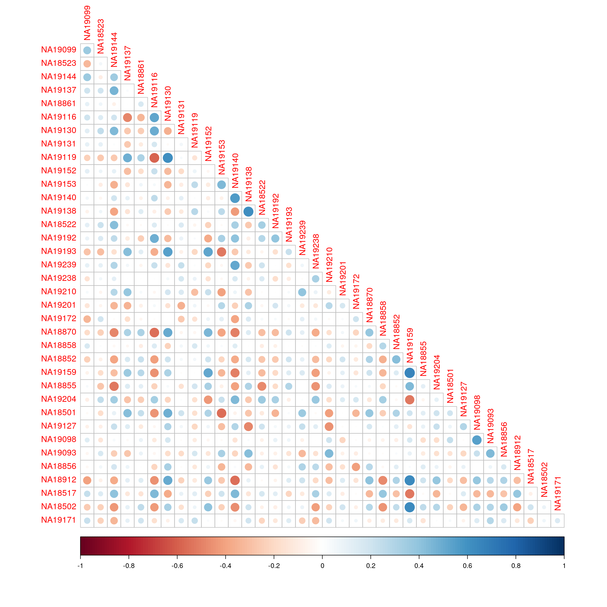
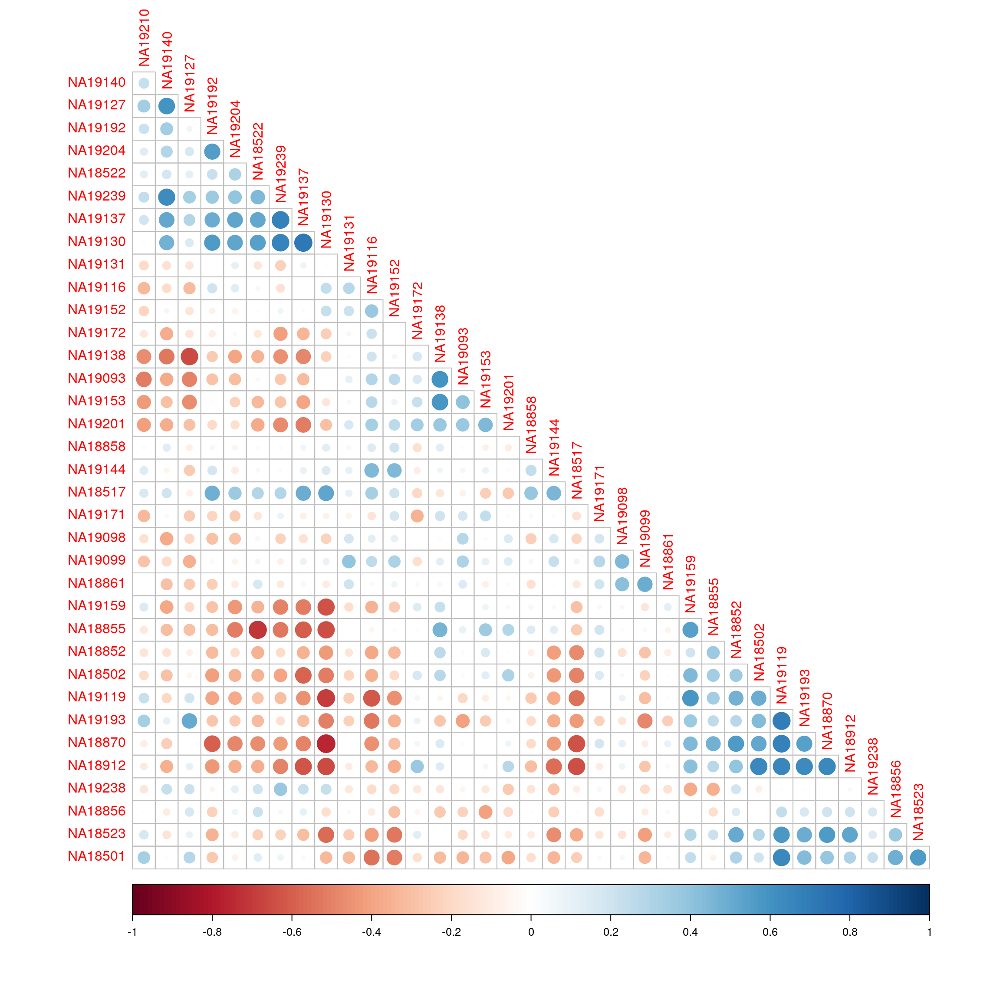
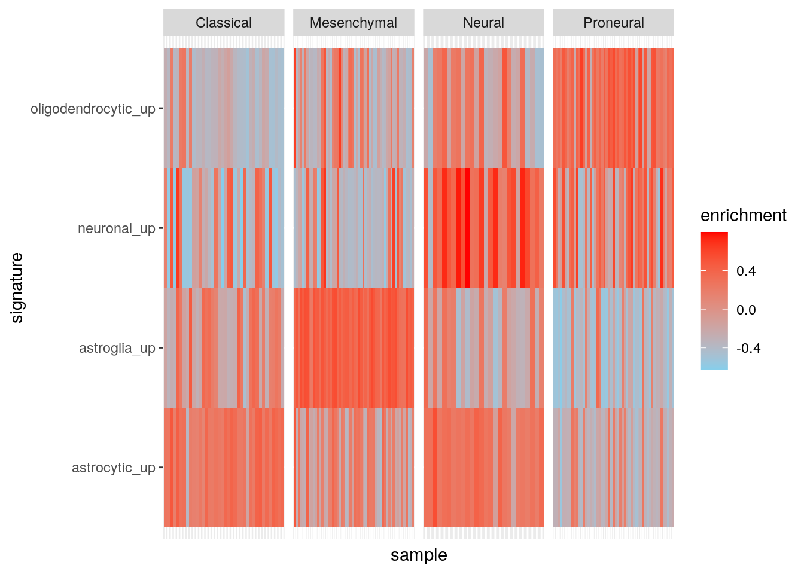

Last updated: 2023-11-08
Checks: 7 0
Knit directory: muse/
This reproducible R Markdown analysis was created with workflowr (version 1.7.1). The Checks tab describes the reproducibility checks that were applied when the results were created. The Past versions tab lists the development history.
Great! Since the R Markdown file has been committed to the Git repository, you know the exact version of the code that produced these results.
Great job! The global environment was empty. Objects defined in the global environment can affect the analysis in your R Markdown file in unknown ways. For reproduciblity it’s best to always run the code in an empty environment.
The command set.seed(20200712) was run prior to running
the code in the R Markdown file. Setting a seed ensures that any results
that rely on randomness, e.g. subsampling or permutations, are
reproducible.
Great job! Recording the operating system, R version, and package versions is critical for reproducibility.
Nice! There were no cached chunks for this analysis, so you can be confident that you successfully produced the results during this run.
Great job! Using relative paths to the files within your workflowr project makes it easier to run your code on other machines.
Great! You are using Git for version control. Tracking code development and connecting the code version to the results is critical for reproducibility.
The results in this page were generated with repository version d80c8a1. See the Past versions tab to see a history of the changes made to the R Markdown and HTML files.
Note that you need to be careful to ensure that all relevant files for
the analysis have been committed to Git prior to generating the results
(you can use wflow_publish or
wflow_git_commit). workflowr only checks the R Markdown
file, but you know if there are other scripts or data files that it
depends on. Below is the status of the Git repository when the results
were generated:
Ignored files:
Ignored: .Rhistory
Ignored: .Rproj.user/
Ignored: r_packages_4.3.2/
Untracked files:
Untracked: analysis/cell_ranger.Rmd
Untracked: analysis/sleuth.Rmd
Untracked: analysis/tss_xgboost.Rmd
Untracked: code/multiz100way/
Untracked: data/HG00702_SH089_CHSTrio.chr1.vcf.gz
Untracked: data/HG00702_SH089_CHSTrio.chr1.vcf.gz.tbi
Untracked: data/ncrna_NONCODE[v3.0].fasta.tar.gz
Untracked: data/ncrna_noncode_v3.fa
Untracked: data/netmhciipan.out.gz
Untracked: export/davetang039sblog.WordPress.2023-06-30.xml
Untracked: export/output/
Untracked: women.json
Unstaged changes:
Modified: analysis/graph.Rmd
Note that any generated files, e.g. HTML, png, CSS, etc., are not included in this status report because it is ok for generated content to have uncommitted changes.
These are the previous versions of the repository in which changes were
made to the R Markdown (analysis/gsva.Rmd) and HTML
(docs/gsva.html) files. If you’ve configured a remote Git
repository (see ?wflow_git_remote), click on the hyperlinks
in the table below to view the files as they were in that past version.
| File | Version | Author | Date | Message |
|---|---|---|---|---|
| Rmd | d80c8a1 | Dave Tang | 2023-11-08 | Molecular signature identification |
| html | 834452d | Dave Tang | 2023-11-08 | Build site. |
| Rmd | 525a52a | Dave Tang | 2023-11-08 | GSVA on microarray and RNA-seq data |
| html | 3f0f517 | Dave Tang | 2023-11-08 | Build site. |
| Rmd | 3f1aa75 | Dave Tang | 2023-11-08 | Elaborate on the different methods |
| html | d6d78a0 | Dave Tang | 2023-11-07 | Build site. |
| Rmd | 794b249 | Dave Tang | 2023-11-07 | All available methods |
| html | 00b6361 | Dave Tang | 2023-11-07 | Build site. |
| Rmd | 2ed827f | Dave Tang | 2023-11-07 | Use Param object |
| html | a0a232a | Dave Tang | 2023-11-07 | Build site. |
| Rmd | 748c6d1 | Dave Tang | 2023-11-07 | Enrichment scores |
| html | a077e6c | Dave Tang | 2023-10-23 | Build site. |
| Rmd | 115752b | Dave Tang | 2023-10-23 | Technical notes |
| html | 14e3e6b | Dave Tang | 2023-10-23 | Build site. |
| Rmd | 9b9327a | Dave Tang | 2023-10-23 | No progress bar |
| html | b0af093 | Dave Tang | 2023-10-23 | Build site. |
| Rmd | aeb90e1 | Dave Tang | 2023-10-23 | GSVA |
Following the vignette.
Gene set variation analysis (GSVA) is a particular type of gene set enrichment method that works on single samples and enables pathway-centric analyses of molecular data by performing a conceptually simple but powerful change in the functional unit of analysis, from genes to gene sets. The GSVA package provides the implementation of four single-sample gene set enrichment methods, concretely zscore, plage, ssGSEA and its own called GSVA. While this methodology was initially developed for gene expression data, it can be applied to other types of molecular profiling data. In this vignette we illustrate how to use the GSVA package with bulk microarray and RNA-seq expression data.
Gene set variation analysis (GSVA) provides an estimate of pathway activity by transforming an input gene-by-sample expression data matrix into a corresponding gene-set-by-sample expression data matrix.
This resulting expression data matrix can be then used with classical analytical methods such as differential expression, classification, survival analysis, clustering or correlation analysis in a pathway-centric manner. One can also perform sample-wise comparisons between pathways and other molecular data types such as microRNA expression or binding data, copy-number variation (CNV) data or single nucleotide polymorphisms (SNPs).
Install GSVA. (Dependencies are listed in the Imports section in the DESCRIPTION file.)
if (!require("BiocManager", quietly = TRUE))
install.packages("BiocManager")
if (!require("GSVA", quietly = TRUE))
BiocManager::install("GSVA")
if (!require("GSVAdata", quietly = TRUE))
BiocManager::install("GSVAdata")Load package.
library(GSVA)
packageVersion("GSVA")[1] '1.50.0'Generate example expression matrix.
p <- 10000
n <- 30
set.seed(1984)
X <- matrix(
rnorm(p*n),
nrow=p,
dimnames=list(paste0("g", 1:p), paste0("s", 1:n))
)
X[1:5, 1:5] s1 s2 s3 s4 s5
g1 0.4092032 1.4676435 0.3515056 1.53512312 -1.279009469
g2 -0.3230250 -1.8501416 -0.9198650 1.40036448 0.086613315
g3 0.6358523 1.6084120 1.6380322 0.23799146 0.216628121
g4 -1.8461288 -0.2928844 0.4651573 -0.09766558 -0.009887299
g5 0.9536474 -0.4816006 0.1807824 1.03141311 0.206414282Generate 100 gene sets that are contain from 10 to up to 100 genes
sampled from 1:p.
set.seed(1984)
gs <- as.list(sample(10:100, size=100, replace=TRUE))
gs <- lapply(gs, function(n, p){
paste0("g", sample(1:p, size=n, replace=FALSE))
}, p)
names(gs) <- paste0("gs", 1:length(gs))
sapply(gs, length) gs1 gs2 gs3 gs4 gs5 gs6 gs7 gs8 gs9 gs10 gs11 gs12 gs13
49 29 67 90 94 87 41 26 86 77 97 90 45
gs14 gs15 gs16 gs17 gs18 gs19 gs20 gs21 gs22 gs23 gs24 gs25 gs26
47 54 83 11 75 95 99 94 89 93 50 49 87
gs27 gs28 gs29 gs30 gs31 gs32 gs33 gs34 gs35 gs36 gs37 gs38 gs39
36 61 84 99 58 30 63 29 35 29 69 41 46
gs40 gs41 gs42 gs43 gs44 gs45 gs46 gs47 gs48 gs49 gs50 gs51 gs52
38 17 48 72 15 81 100 93 37 99 89 43 36
gs53 gs54 gs55 gs56 gs57 gs58 gs59 gs60 gs61 gs62 gs63 gs64 gs65
84 83 40 72 90 86 37 23 69 96 20 93 36
gs66 gs67 gs68 gs69 gs70 gs71 gs72 gs73 gs74 gs75 gs76 gs77 gs78
21 46 76 71 57 48 25 73 26 46 29 53 69
gs79 gs80 gs81 gs82 gs83 gs84 gs85 gs86 gs87 gs88 gs89 gs90 gs91
69 42 76 30 16 49 35 12 83 99 88 66 10
gs92 gs93 gs94 gs95 gs96 gs97 gs98 gs99 gs100
51 82 73 97 59 59 42 10 64 Calculate GSVA enrichment scores using the gsva()
function, which does all the work and requires the following two input
arguments:
The first argument to the
gsva()function is the gene expression data matrix and the second the collection of gene sets. Thegsva()function can take the input expression data and gene sets using different specialized containers that facilitate the access and manipulation of molecular and phenotype data, as well as their associated metadata. Another advanced features include the use of on-disk and parallel backends to enable, respectively, using GSVA on large molecular data sets and speed up computing time.
The gsva() function will apply the following filters
before the actual calculations take place:
Inf for the maximum size.When method="gsva" is used (the default), the following
parameters can be tuned:
kcdf: The first step of the GSVA algorithm brings gene
expression profiles to a common scale by calculating an expression
statistic through a non-parametric estimation of the CDF across samples.
Such a non-parametric estimation employs a kernel function and the
kcdf parameter allows the user to specify three possible
values for that function:mx.diff: The last step of the GSVA algorithm calculates
the gene set enrichment score from two Kolmogorov-Smirnov random walk
statistics. This parameter is a logical flag that allows the user to
specify two possible ways to do such calculation:TRUE, the default value, where the enrichment score is
calculated as the magnitude difference between the largest positive and
negative random walk deviations;FALSE, where the enrichment score is calculated as the
maximum distance of the random walk from zero.abs.ranking: Logical flag used only when
mx.diff=TRUE. By default, abs.ranking=FALSE
and it implies that a modified Kuiper statistic is used to calculate
enrichment scores, taking the magnitude difference between the largest
positive and negative random walk deviations. When
abs.ranking=TRUE the original Kuiper statistic is used, by
which the largest positive and negative random walk deviations are added
together. In this case, gene sets with genes enriched on either extreme
(high or low) will be regarded as highly activated.
tau: Exponent defining the weight of the tail in the
random walk. By default tau=1. When
method="ssgsea", this parameter is also used and its
default value becomes then tau=0.25 to match the
methodology described in (Barbie et al. 2009).
In general, the default values for the previous parameters are suitable for most analysis settings, which usually consist of some kind of normalized continuous expression values.
es_gsva <- gsva(gsvaParam(X, gs), verbose=FALSE)
dim(es_gsva)[1] 100 30Median enrichment scores.
apply(es_gsva, 2, median) s1 s2 s3 s4 s5 s6
0.009061514 -0.008458424 -0.005713628 -0.021937531 0.006417182 0.019422486
s7 s8 s9 s10 s11 s12
0.010140618 0.005812097 0.006495584 0.008887644 0.024577619 -0.031697634
s13 s14 s15 s16 s17 s18
0.001642502 0.008919786 -0.022622470 0.027695420 -0.015799537 -0.011108686
s19 s20 s21 s22 s23 s24
-0.013956442 -0.015493300 -0.004809844 -0.014081494 0.026845336 0.023895676
s25 s26 s27 s28 s29 s30
0.006358240 0.010642450 -0.012690144 -0.005999451 -0.005058572 -0.012403422 ssgsea (Barbie et al. 2009). Single sample GSEA (ssGSEA) is a non-parametric method that calculates a gene set enrichment score per sample as the normalized difference in empirical cumulative distribution functions (CDFs) of gene expression ranks inside and outside the gene set. By default, the implementation in the GSVA package follows the last step described in (Barbie et al. 2009, online methods, pg. 2) by which pathway scores are normalized, dividing them by the range of calculated values. This normalization step may be switched off using the argument ssgsea.norm in the call to the gsva() function; see below.
es_ssgsea <- gsva(ssgseaParam(X, gs), verbose=FALSE)[1] "Calculating ranks..."
[1] "Calculating absolute values from ranks..."
[1] "Normalizing..."apply(es_ssgsea, 2, median) s1 s2 s3 s4 s5 s6 s7 s8
0.1056332 0.1105148 0.1149790 0.1045303 0.1192256 0.1274702 0.1192217 0.1287768
s9 s10 s11 s12 s13 s14 s15 s16
0.1316429 0.1257247 0.1293241 0.1083643 0.1222038 0.1012195 0.1018693 0.1174057
s17 s18 s19 s20 s21 s22 s23 s24
0.1103184 0.1112410 0.1164373 0.1126160 0.1212393 0.1067666 0.1167117 0.1418775
s25 s26 s27 s28 s29 s30
0.1221909 0.1235449 0.1112199 0.1012381 0.1254514 0.1210392 Create another test matrix.
p <- 10000
n <- 2
set.seed(1984)
X <- matrix(
rnorm(n = p*n, mean = 10, sd = 10),
nrow=p,
dimnames=list(paste0("g", 1:p), paste0("s", 1:n))
)
X[1:50, 's1'] <- rnorm(n = 50, mean = 50, sd = 55)
X[51:100, 's1'] <- rnorm(n = 50, mean = 2, sd = 2)
X[1:50, 's2'] <- rnorm(n = 50, mean = 100, sd = 5)
X[51:100, 's2'] <- rnorm(n = 50, mean = 2, sd = 0.5)
X[1:5, ] s1 s2
g1 69.3328103 96.46911
g2 -0.5925752 96.19110
g3 140.0917737 102.47525
g4 75.5836499 103.64442
g5 59.9430328 99.50861Create testing gene lists with higher and lower expression patterns and check their enrichment scores.
gene_set <- list(
gs1 = paste0("g", 1:50),
gs2 = paste0("g", 51:100),
gs3 = paste0("g", 101:150)
)ssgsea (Barbie et al. 2009). Single sample GSEA (ssGSEA) is
a non-parametric method that calculates a gene set enrichment score per
sample as the normalized difference in empirical cumulative distribution
functions (CDFs) of gene expression ranks inside and outside the gene
set. By default, the implementation in the GSVA package follows the last
step described in (Barbie et al. 2009, online methods, pg. 2) by which
pathway scores are normalized, dividing them by the range of calculated
values. This normalization step may be switched off using the argument
ssgsea.norm in the call to the gsva()
function.
test_ssgsea <- gsva(ssgseaParam(X, gene_set), verbose=FALSE)[1] "Calculating ranks..."
[1] "Calculating absolute values from ranks..."
[1] "Normalizing..."test_ssgsea s1 s2
gs1 0.50202664 0.62745511
gs2 -0.35383441 -0.37254489
gs3 0.01605471 0.08617871No normalisation.
test_ssgsea <- gsva(ssgseaParam(X, gene_set, normalize = FALSE), verbose=FALSE)[1] "Calculating ranks..."
[1] "Calculating absolute values from ranks..."test_ssgsea s1 s2
gs1 4000.5026 5000.0052
gs2 -2819.6024 -2968.7007
gs3 127.9353 686.7328gsva (Hanzelmann, Castelo, and Guinney 2013). This is the default method of the package and similarly to ssGSEA, is a non-parametric method that uses the empirical CDFs of gene expression ranks inside and outside the gene set, but it starts by calculating an expression-level statistic that brings gene expression profiles with different dynamic ranges to a common scale.
test_gsva <- gsva(gsvaParam(X, gene_set), verbose=FALSE)
test_gsva s1 s2
gs1 0.9771127 0.9994906
gs2 0.9869514 0.9896900
gs3 0.9716955 0.9815203zscore (Lee et al. 2008). The z-score method standardizes expression profiles over the samples and then, for each gene set, combines the standardized values as follows. Given a gene set \(\gamma = \{1, \ldots ,k\}\) with standardized values \(\{z_1,\ldots,z_k\}\) for each gene in a specific sample, the combined z-score \(Z_\gamma\) for the gene set \(\gamma\) is defined as:
\[ Z_\gamma = \frac{\sum^k_{i=1} z_i}{\sqrt{k}}.\]
test_zscore <- gsva(zscoreParam(X, gene_set), verbose=FALSE)
test_zscore s1 s2
gs1 -2.8 2.8
gs2 0.4 -0.4
gs3 -0.4 0.4plage (Tomfohr, Lu, and Kepler 2005). Pathway level analysis of gene expression (PLAGE) standardizes expression profiles over the samples and then, for each gene set, it performs a singular value decomposition (SVD) over its genes. The coefficients of the first right-singular vector are returned as the estimates of pathway activity over the samples. Note that, because of how SVD is calculated, the sign of its singular vectors is arbitrary.
test_plage <- gsva(plageParam(X, gene_set), verbose=FALSE)
test_plage s1 s2
gs1 0.7071068 -0.7071068
gs2 -0.7071068 0.7071068
gs3 0.7071068 -0.7071068Gene expression data of lymphoblastoid cell lines (LCL) from HapMap individuals that have been profiled using microarray and RNA-seq.
library(Biobase)
library(GSVAdata)
data(c2BroadSets)
data(commonPickrellHuang)
stopifnot(
identical(
featureNames(huangArrayRMAnoBatchCommon_eset),
featureNames(pickrellCountsArgonneCQNcommon_eset)
)
)
stopifnot(
identical(
sampleNames(huangArrayRMAnoBatchCommon_eset),
sampleNames(pickrellCountsArgonneCQNcommon_eset)
)
)
pickrellCountsArgonneCQNcommon_esetExpressionSet (storageMode: lockedEnvironment)
assayData: 11508 features, 36 samples
element names: exprs
protocolData
rowNames: NA19099 NA18523 ... NA19171 (36 total)
varLabels: exprs dates
varMetadata: labelDescription channel
phenoData
rowNames: NA19099 NA18523 ... NA19171 (36 total)
varLabels: CoriellCellLineID Population ... FamilyRelationship (5
total)
varMetadata: channel labelDescription
featureData: none
experimentData: use 'experimentData(object)'
Annotation: org.Hs.eg.db For the current analysis we use the subset of canonical pathways from the C2 collection of MSigDB Gene Sets. These correspond to the following pathways from KEGG, REACTOME and BIOCARTA.
canonicalC2BroadSets <- c2BroadSets[
c(
grep("^KEGG", names(c2BroadSets)),
grep("^REACTOME", names(c2BroadSets)),
grep("^BIOCARTA", names(c2BroadSets))
)
]
canonicalC2BroadSetsGeneSetCollection
names: KEGG_GLYCOLYSIS_GLUCONEOGENESIS, KEGG_CITRATE_CYCLE_TCA_CYCLE, ..., BIOCARTA_ACTINY_PATHWAY (833 total)
unique identifiers: 55902, 2645, ..., 8544 (6744 total)
types in collection:
geneIdType: EntrezIdentifier (1 total)
collectionType: BroadCollection (1 total)We calculate the GSVA enrichment scores for these gene sets using
first the normalized microarray data and then the normalized RNA-seq
integer count data. Note that the only requirement to do the latter is
to set the argument kcdf="Poisson", which is
"Gaussian" by default. However, if the RNA-seq normalized
expression levels is continuous, such as log-CPMs, log-RPKMs or
log-TPMs, use "Gaussian".
Microarray.
huangPar <- gsvaParam(
exprData = huangArrayRMAnoBatchCommon_eset,
geneSets = canonicalC2BroadSets,
minSize=5,
maxSize=500
)
esmicro <- gsva(huangPar, verbose=FALSE)Mapping identifiers between gene sets and feature namesexprs(esmicro)[1:6, 1:6] NA19099 NA18523
KEGG_GLYCOLYSIS_GLUCONEOGENESIS -0.14418012 -0.3133817
KEGG_CITRATE_CYCLE_TCA_CYCLE -0.20263269 0.2546732
KEGG_PENTOSE_PHOSPHATE_PATHWAY 0.13384996 -0.3426199
KEGG_PENTOSE_AND_GLUCURONATE_INTERCONVERSIONS -0.04814412 0.2649390
KEGG_FRUCTOSE_AND_MANNOSE_METABOLISM -0.05277464 -0.2559473
KEGG_GALACTOSE_METABOLISM -0.51060398 -0.3263793
NA19144 NA19137
KEGG_GLYCOLYSIS_GLUCONEOGENESIS -0.39117167 0.21340339
KEGG_CITRATE_CYCLE_TCA_CYCLE 0.01268519 -0.23423639
KEGG_PENTOSE_PHOSPHATE_PATHWAY 0.01105565 0.10473591
KEGG_PENTOSE_AND_GLUCURONATE_INTERCONVERSIONS -0.24778162 -0.57051071
KEGG_FRUCTOSE_AND_MANNOSE_METABOLISM -0.27260660 0.02654463
KEGG_GALACTOSE_METABOLISM -0.33944553 0.18058711
NA18861 NA19116
KEGG_GLYCOLYSIS_GLUCONEOGENESIS 0.3989804 -0.03179434
KEGG_CITRATE_CYCLE_TCA_CYCLE 0.1669631 -0.19060735
KEGG_PENTOSE_PHOSPHATE_PATHWAY 0.5331964 0.08319882
KEGG_PENTOSE_AND_GLUCURONATE_INTERCONVERSIONS -0.1518934 -0.12257602
KEGG_FRUCTOSE_AND_MANNOSE_METABOLISM 0.4662563 -0.07516578
KEGG_GALACTOSE_METABOLISM 0.5901477 -0.05433206RNA-seq.
pickrellPar <- gsvaParam(
exprData = pickrellCountsArgonneCQNcommon_eset,
geneSets = canonicalC2BroadSets,
minSize=5,
maxSize=500,
kcdf="Poisson"
)
esrnaseq <- gsva(pickrellPar, verbose=FALSE)Mapping identifiers between gene sets and feature namesexprs(esrnaseq)[1:6, 1:6] NA19099 NA18523 NA19144
KEGG_GLYCOLYSIS_GLUCONEOGENESIS 0.2292013 -0.26418772 -0.37401687
KEGG_CITRATE_CYCLE_TCA_CYCLE 0.1953447 -0.20215701 -0.31886736
KEGG_PENTOSE_PHOSPHATE_PATHWAY 0.3957182 -0.35222123 -0.14016244
KEGG_PENTOSE_AND_GLUCURONATE_INTERCONVERSIONS 0.3043138 -0.23429588 -0.27059673
KEGG_FRUCTOSE_AND_MANNOSE_METABOLISM 0.1123176 -0.06274804 -0.04494400
KEGG_GALACTOSE_METABOLISM 0.0606202 -0.42485552 -0.03930301
NA19137 NA18861 NA19116
KEGG_GLYCOLYSIS_GLUCONEOGENESIS 0.2913508 0.17081880 -0.4570259
KEGG_CITRATE_CYCLE_TCA_CYCLE 0.2573530 0.09452472 -0.1433765
KEGG_PENTOSE_PHOSPHATE_PATHWAY 0.3585130 0.16414025 -0.2658944
KEGG_PENTOSE_AND_GLUCURONATE_INTERCONVERSIONS -0.2453460 -0.06027442 0.0470686
KEGG_FRUCTOSE_AND_MANNOSE_METABOLISM 0.4431209 -0.43879510 -0.2629824
KEGG_GALACTOSE_METABOLISM 0.3496528 -0.12188569 -0.4629607Correlation of enrichment scores between the two technologies.
library(corrplot)corrplot 0.92 loadedcorrplot(cor(exprs(esrnaseq), exprs(esmicro)), type="lower")
| Version | Author | Date |
|---|---|---|
| 834452d | Dave Tang | 2023-11-08 |
Correlation of enrichment scores between just the RNA-seq samples ordered using hierarchical clustering.
corrplot(cor(exprs(esrnaseq), exprs(esrnaseq)), type="lower", diag = FALSE, order = "hclust")
| Version | Author | Date |
|---|---|---|
| 834452d | Dave Tang | 2023-11-08 |
Verhaak et al. 2010 identified four subtypes of glioblastoma multiforme (GBM) using gene expression patterns:
Here we will try to replicate the study using four gene set signatures specific to brain cell types that were derived using mouse models by Cahoy et al. 2008:
data(gbm_VerhaakEtAl)
gbm_esetExpressionSet (storageMode: lockedEnvironment)
assayData: 11861 features, 173 samples
element names: exprs
protocolData: none
phenoData
rowNames: TCGA.02.0003.01A.01 TCGA.02.0010.01A.01 ...
TCGA.12.0620.01A.01 (173 total)
varLabels: subtype
varMetadata: labelDescription channel
featureData: none
experimentData: use 'experimentData(object)'
Annotation: Feature names are gene symbols.
head(featureNames(gbm_eset))[1] "AACS" "FSTL1" "ELMO2" "CREB3L1" "RPS11" "PNMA1" Subtypes.
table(gbm_eset$subtype)
Classical Mesenchymal Neural Proneural
38 56 26 53 Length of the signatures.
data(brainTxDbSets)
lengths(brainTxDbSets) astrocytic_up astroglia_up neuronal_up oligodendrocytic_up
85 88 98 70 Check out the signatures.
lapply(brainTxDbSets, head)$astrocytic_up
[1] "GRHL1" "GPAM" "PAPSS2" "MERTK" "BTG1" "SLC46A1"
$astroglia_up
[1] "BST2" "SERPING1" "ACTA2" "C9orf167" "C1orf31" "ANXA4"
$neuronal_up
[1] "STXBP1" "JPH4" "CACNG3" "BRUNOL6" "CLSTN2" "FAM123C"
$oligodendrocytic_up
[1] "DCT" "ZNF536" "GNG8" "ELOVL6" "NR2C1" "RCBTB1"GSVA enrichment scores are calculated using the gene sets contained
in brainTxDbSets; maxDiff is set to
FALSE. Here’s a reminder of what this parameter does:
max.diff: The last step of the GSVA algorithm calculates
the gene set enrichment score from two Kolmogorov-Smirnov random walk
statistics. This parameter is a logical flag that allows the user to
specify two possible ways to do such calculation:
TRUE, the default value, where the enrichment score is
calculated as the magnitude difference between the largest positive and
negative random walk deviations;FALSE, where the enrichment score is calculated as the
maximum distance of the random walk from zero.gbmPar <- gsvaParam(gbm_eset, brainTxDbSets, maxDiff=FALSE)
gbm_es <- gsva(gbmPar, verbose=FALSE)Prepare data frame for plotting.
my_df <- data.frame(
sample = colnames(gbm_eset),
subtype = gbm_eset$subtype
)
t(exprs(gbm_es)) |>
as.data.frame() |>
tibble::rownames_to_column('sample') |>
dplyr::inner_join(my_df, by = "sample") |>
dplyr::mutate(sample = factor(sample, levels = sample)) |>
tidyr::pivot_longer(cols = c(-sample, -subtype), names_to = "signature", values_to = "enrichment") -> my_df
head(my_df)# A tibble: 6 × 4
sample subtype signature enrichment
<fct> <fct> <chr> <dbl>
1 TCGA.02.0003.01A.01 Proneural astrocytic_up -0.305
2 TCGA.02.0003.01A.01 Proneural astroglia_up -0.515
3 TCGA.02.0003.01A.01 Proneural neuronal_up 0.554
4 TCGA.02.0003.01A.01 Proneural oligodendrocytic_up 0.332
5 TCGA.02.0010.01A.01 Proneural astrocytic_up -0.295
6 TCGA.02.0010.01A.01 Proneural astroglia_up -0.541Plot.
library(ggplot2)
ggplot(my_df, aes(sample, signature, fill = enrichment)) +
geom_tile() +
facet_grid(~subtype, scales = "free") +
theme(
axis.text.x = element_blank(), axis.ticks.x = element_blank()
) +
scale_fill_gradient(low = "skyblue", high = "red")
Results using maxDiff=TRUE.
gbmPar <- gsvaParam(gbm_eset, brainTxDbSets, maxDiff=TRUE)
gbm_es <- gsva(gbmPar, verbose=FALSE)
my_df <- data.frame(
sample = colnames(gbm_eset),
subtype = gbm_eset$subtype
)
t(exprs(gbm_es)) |>
as.data.frame() |>
tibble::rownames_to_column('sample') |>
dplyr::inner_join(my_df, by = "sample") |>
dplyr::mutate(sample = factor(sample, levels = sample)) |>
tidyr::pivot_longer(cols = c(-sample, -subtype), names_to = "signature", values_to = "enrichment") -> my_df
ggplot(my_df, aes(sample, signature, fill = enrichment)) +
geom_tile() +
facet_grid(~subtype, scales = "free") +
theme(
axis.text.x = element_blank(), axis.ticks.x = element_blank()
) +
scale_fill_gradient(low = "skyblue", high = "red")
sessionInfo()R version 4.3.2 (2023-10-31)
Platform: x86_64-pc-linux-gnu (64-bit)
Running under: Ubuntu 22.04.3 LTS
Matrix products: default
BLAS: /usr/lib/x86_64-linux-gnu/openblas-pthread/libblas.so.3
LAPACK: /usr/lib/x86_64-linux-gnu/openblas-pthread/libopenblasp-r0.3.20.so; LAPACK version 3.10.0
locale:
[1] LC_CTYPE=en_US.UTF-8 LC_NUMERIC=C
[3] LC_TIME=en_US.UTF-8 LC_COLLATE=en_US.UTF-8
[5] LC_MONETARY=en_US.UTF-8 LC_MESSAGES=en_US.UTF-8
[7] LC_PAPER=en_US.UTF-8 LC_NAME=C
[9] LC_ADDRESS=C LC_TELEPHONE=C
[11] LC_MEASUREMENT=en_US.UTF-8 LC_IDENTIFICATION=C
time zone: Etc/UTC
tzcode source: system (glibc)
attached base packages:
[1] stats4 stats graphics grDevices utils datasets methods
[8] base
other attached packages:
[1] ggplot2_3.4.4 corrplot_0.92 GSVAdata_1.38.0
[4] hgu95a.db_3.13.0 org.Hs.eg.db_3.18.0 GSEABase_1.64.0
[7] graph_1.80.0 annotate_1.80.0 XML_3.99-0.15
[10] AnnotationDbi_1.64.1 IRanges_2.36.0 S4Vectors_0.40.1
[13] Biobase_2.62.0 BiocGenerics_0.48.1 GSVA_1.50.0
[16] BiocManager_1.30.22 workflowr_1.7.1
loaded via a namespace (and not attached):
[1] DBI_1.1.3 bitops_1.0-7
[3] rlang_1.1.2 magrittr_2.0.3
[5] git2r_0.32.0 matrixStats_1.0.0
[7] compiler_4.3.2 RSQLite_2.3.3
[9] getPass_0.2-2 DelayedMatrixStats_1.24.0
[11] png_0.1-8 callr_3.7.3
[13] vctrs_0.6.4 stringr_1.5.0
[15] pkgconfig_2.0.3 crayon_1.5.2
[17] fastmap_1.1.1 XVector_0.42.0
[19] labeling_0.4.3 utf8_1.2.4
[21] promises_1.2.1 rmarkdown_2.25
[23] ps_1.7.5 purrr_1.0.2
[25] bit_4.0.5 xfun_0.41
[27] zlibbioc_1.48.0 cachem_1.0.8
[29] beachmat_2.18.0 GenomeInfoDb_1.38.0
[31] jsonlite_1.8.7 blob_1.2.4
[33] highr_0.10 later_1.3.1
[35] rhdf5filters_1.14.1 DelayedArray_0.28.0
[37] Rhdf5lib_1.24.0 BiocParallel_1.36.0
[39] irlba_2.3.5.1 parallel_4.3.2
[41] R6_2.5.1 bslib_0.5.1
[43] stringi_1.7.12 GenomicRanges_1.54.1
[45] jquerylib_0.1.4 Rcpp_1.0.11
[47] SummarizedExperiment_1.32.0 knitr_1.45
[49] tidyselect_1.2.0 httpuv_1.6.12
[51] Matrix_1.6-1.1 rstudioapi_0.15.0
[53] abind_1.4-5 yaml_2.3.7
[55] codetools_0.2-19 processx_3.8.2
[57] lattice_0.21-9 tibble_3.2.1
[59] withr_2.5.2 KEGGREST_1.42.0
[61] evaluate_0.23 Biostrings_2.70.1
[63] pillar_1.9.0 MatrixGenerics_1.14.0
[65] whisker_0.4.1 generics_0.1.3
[67] rprojroot_2.0.4 RCurl_1.98-1.13
[69] munsell_0.5.0 scales_1.2.1
[71] sparseMatrixStats_1.14.0 xtable_1.8-4
[73] glue_1.6.2 tools_4.3.2
[75] ScaledMatrix_1.10.0 fs_1.6.3
[77] rhdf5_2.46.0 grid_4.3.2
[79] tidyr_1.3.0 colorspace_2.1-0
[81] SingleCellExperiment_1.24.0 GenomeInfoDbData_1.2.11
[83] BiocSingular_1.18.0 HDF5Array_1.30.0
[85] cli_3.6.1 rsvd_1.0.5
[87] fansi_1.0.5 S4Arrays_1.2.0
[89] dplyr_1.1.3 gtable_0.3.4
[91] sass_0.4.7 digest_0.6.33
[93] SparseArray_1.2.1 farver_2.1.1
[95] memoise_2.0.1 htmltools_0.5.7
[97] lifecycle_1.0.3 httr_1.4.7
[99] bit64_4.0.5